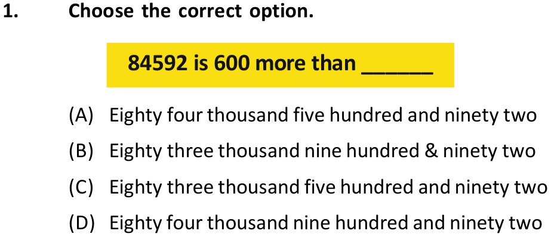
Choose the correct option.
84592 is 600 more than ______
Eighty four thousand five hundred and ninety two
Eighty three thousand nine hundred & ninety two
Eighty three thousand five hundred and ninety two
Eighty four thousand nine hundred and ninety two
(B) Note that 84592 is bigger than the required
number
84592 – 600 = 83992
83992 written in words is
Eighty three thousand, nine hundred and ninety two
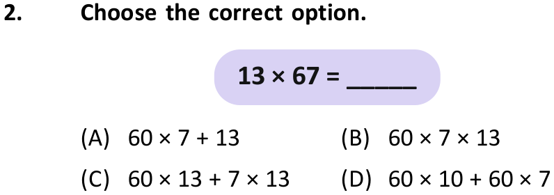
Choose the correct option.
60 × 7 + 13
60 × 7 × 13
60 × 13 + 7 × 13
60 × 10 + 60 × 7
(C) 13 × 67 = 67 × 13
= 67 groups of 13
= 60 groups of 13 + 7 groups of 13 = 60 × 13 + 7 × 13
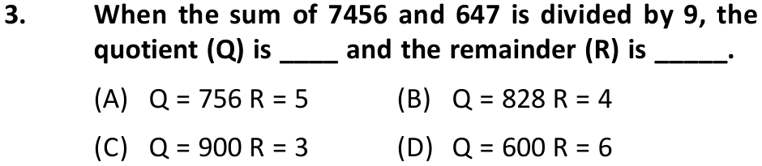
When the sum of 7456 and 647 is divided by 9, the quotient (Q) is ____ and the remainder (R) is _____.
Q = 756 R = 5
Q = 828 R = 4
Q = 900 R = 3
Q = 600 R = 6
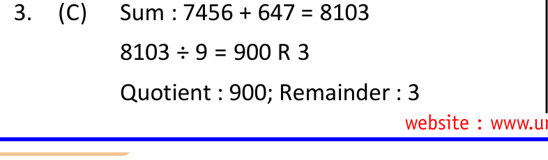
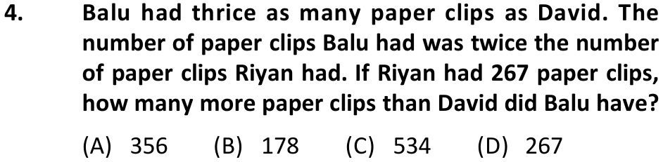
Balu had thrice as many paper clips as David. The number of paper clips Balu had was twice the number of paper clips Riyan had. If Riyan had 267 paper clips, how many more paper clips than David did Balu have?
356
178
534
267
(A) Riyan → 267 paper clips
Balu → 2 × 267
= 534 paper clips
David → 534 ÷ 3
= 178 paper clips
534 – 178 = 356
Balu had 356 more paper clips than David
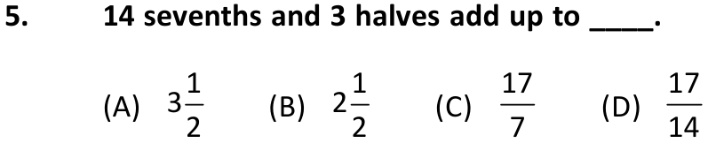
14 sevenths and 3 halves add up to ____.
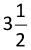
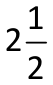
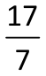
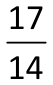
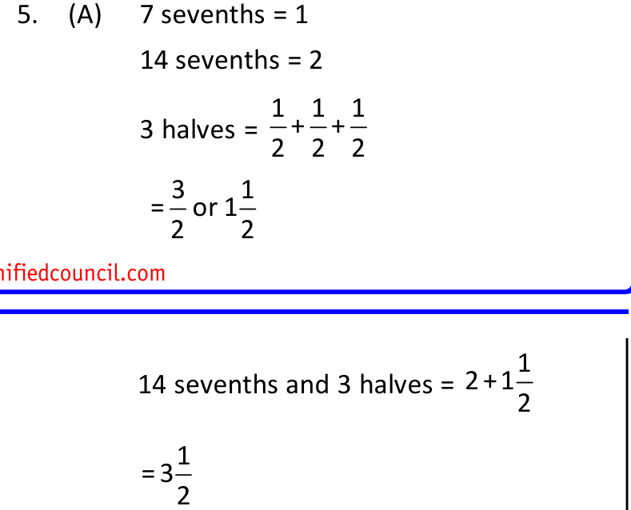
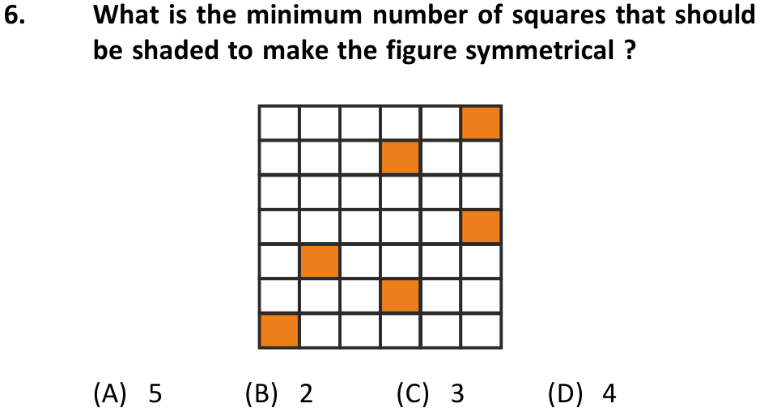
What is the minimum number of squares that should be shaded to make the figure symmetrical ?
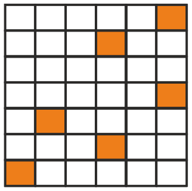
5
2
3
4
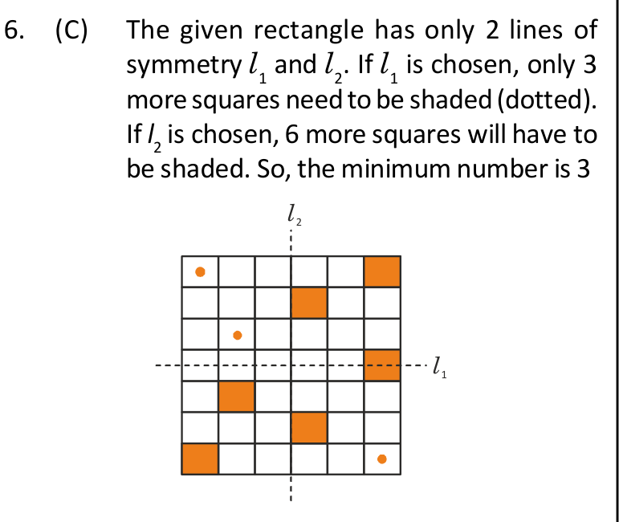
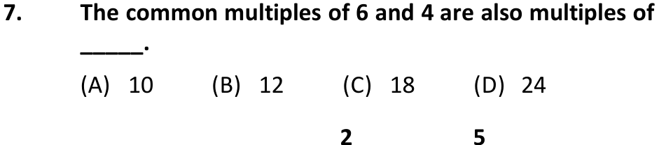
The common multiples of 6 and 4 are also multiples of _____.
10
12
18
24
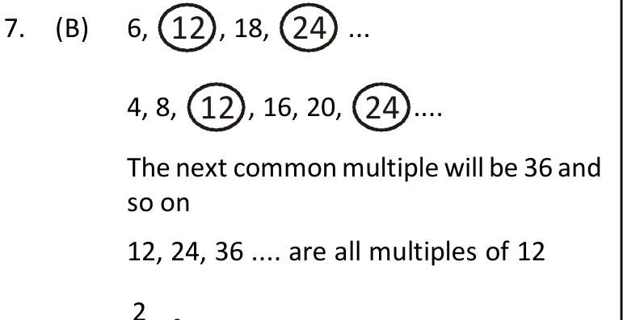
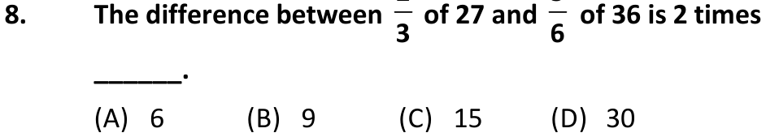
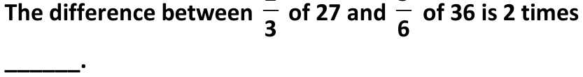
6
9
15
30
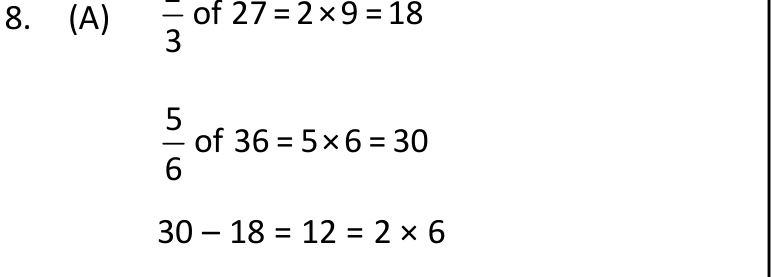
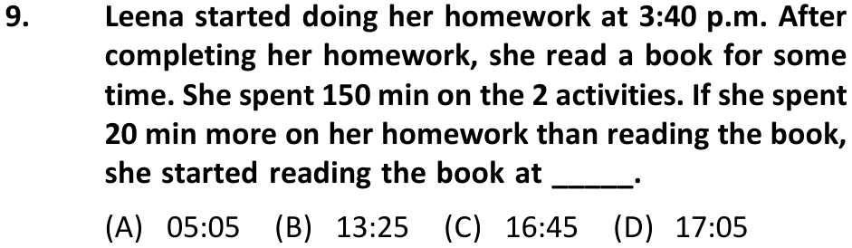
Leena started doing her homework at 3:40 p.m. After completing her homework, she read a book for some time. She spent 150 min on the 2 activities. If she spent 20 min more on her homework than reading the book, she started reading the book at _____.
05:05
13:25
16:45
17:05
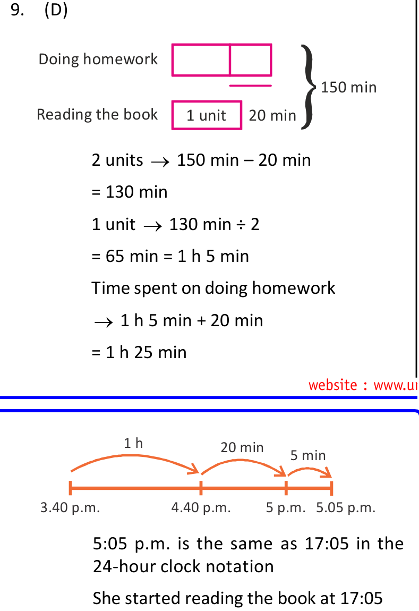
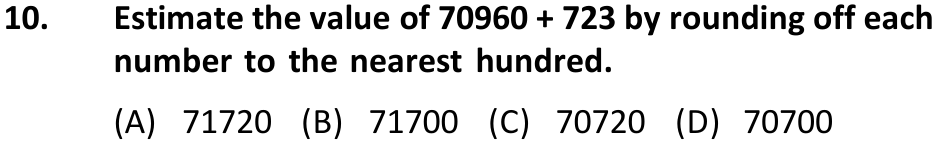
Estimate the value of 70960 + 723 by rounding off each number to the nearest hundred.
71720
71700
70720
70700
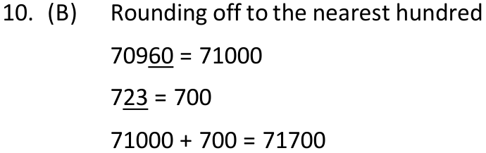
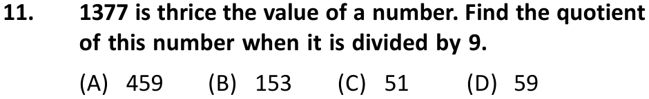
1377 is thrice the value of a number. Find the quotient of this number when it is divided by 9.
459
153
51
59
1377 ÷ 3 = 459
The quotient of 459 when it is divided by 9 459 ÷ 9 = 51
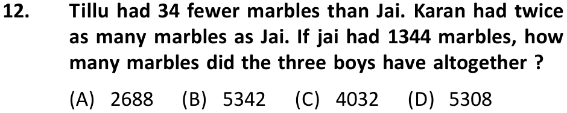
Tillu had 34 fewer marbles than Jai. Karan had twice as many marbles as Jai. If jai had 1344 marbles, how many marbles did the three boys have altogether ?
2688
5342
4032
5308
Number of marbles with jai = 1344
Number of marbles with Tillu
= 1344 – 34 = 1310
Number of marbles with Karan
= 1344 × 2 = 2688
Total number of marbles with the three boys = 1344 + 1310 + 2688 = 5342
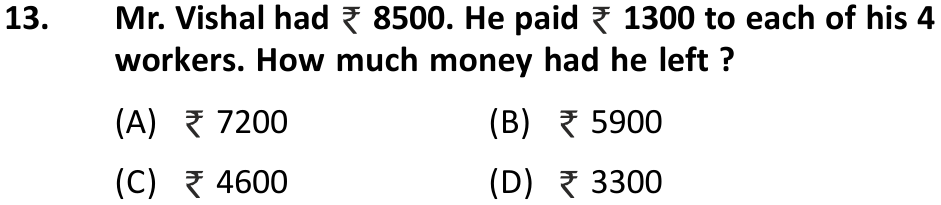
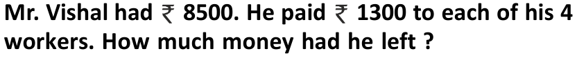
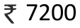
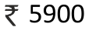
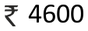
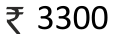
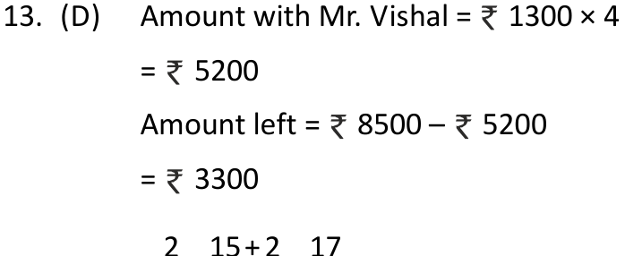
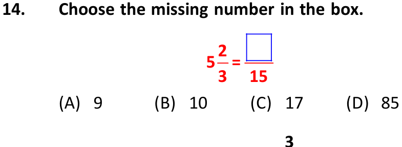
Choose the missing number in the box.
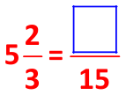
9
10
17
85
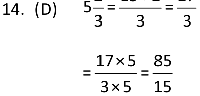
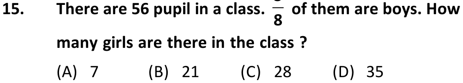
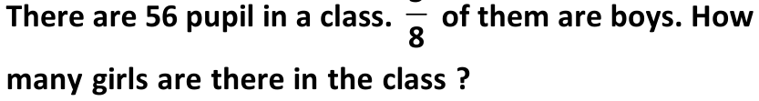
7
21
28
35
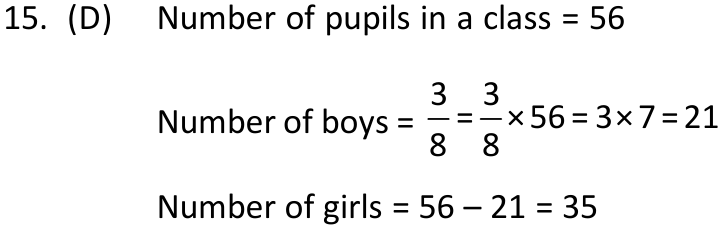
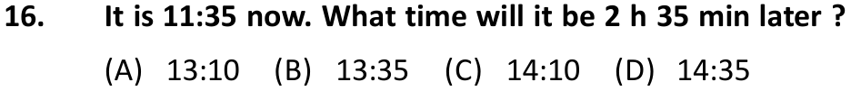
It is 11:35 now. What time will it be 2 h 35 min later ?
13:10
13:35
14:10
14:35
Given time = 11 : 35
The time 2 h 35 min later = 11 : 35 + 2 h 35 min
= 13 : 70 = 14 : 10
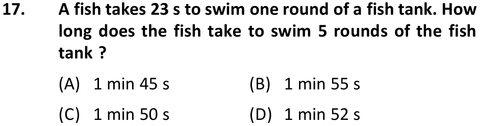
A fish takes 23 s to swim one round of a fish tank. How long does the fish take to swim 5 rounds of the fish tank ?
1 min 45 s
1 min 55 s
1 min 50 s
1 min 52 s
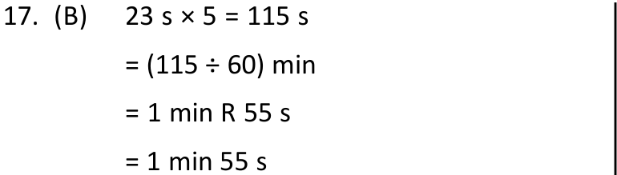
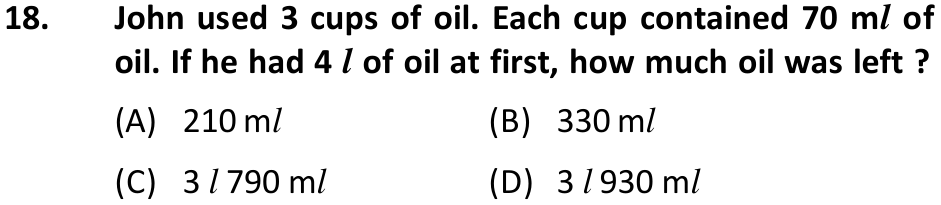
John used 3 cups of oil. Each cup contained 70 ml of oil. If he had 4 l of oil at first, how much oil was left ?
210 ml
330 ml
3 l 790 ml
3 l 930 ml
3 × 70 ml = 210 ml
4000 ml – 210 ml = 3790 ml
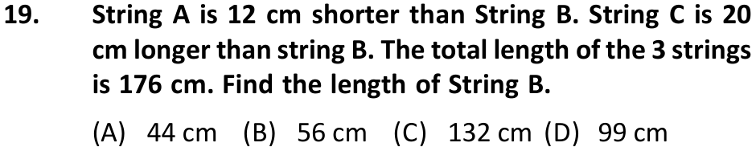
String A is 12 cm shorter than String B. String C is 20 cm longer than string B. The total length of the 3 strings is 176 cm. Find the length of String B.
44 cm
56 cm
132 cm
99 cm
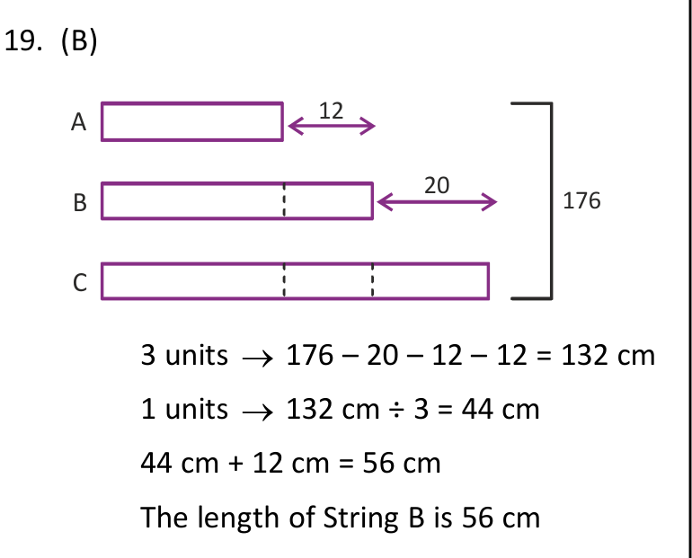
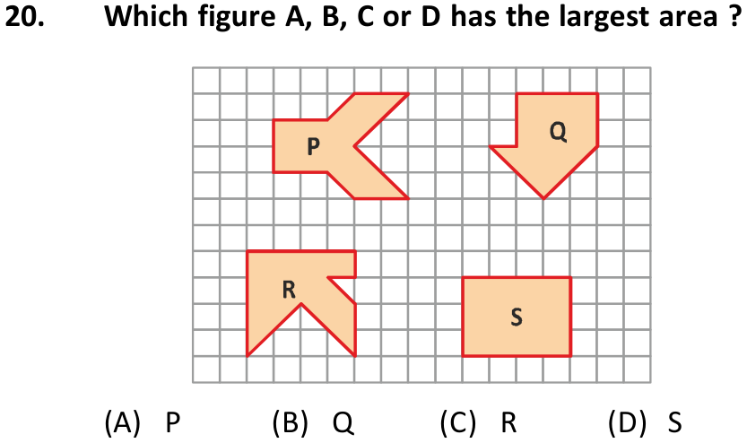
Which figure A, B, C or D has the largest area ?
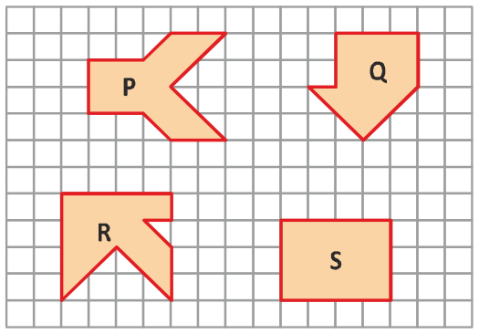
P
Q
R
S
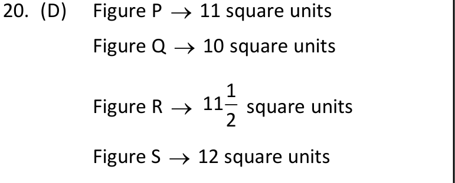
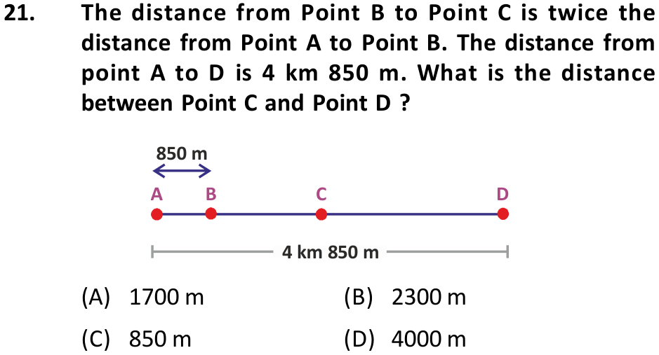
The distance from Point B to Point C is twice the distance from Point A to Point B. The distance from point A to D is 4 km 850 m. What is the distance between Point C and Point D ?
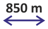
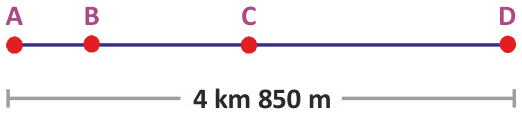
1700 m
2300 m
850 m
4000 m
2 × 850 = 1700 m
4850 – 850 – 1700 = 2300 m
The perimeter of a rectangle is 90 cm. The length of a rectangle is twice as long as its breadth. What is the length of a rectangle ?
45 cm
30 cm
22 cm
15 cm
Tarun’s mother has a mass of 42 kg. She is 3 times as heavy as Tarun. His father is 57 kg heavier than Tarun. Find the total mass of the three of them.
130 kg
129 kg
132 kg
127 kg
Tarun’s mother → 42 kg
Tarun’s mass → 42 ÷ 3 = 14 kg
Tarun’s father = 57 kg + 14 kg = 71 kg 42 + 14 + 71 = 127 kg
Total mass is 127 kg
The total age of Nina and her brother is 28 years 9 months. If Nina is 18 years 11 months old, how old is her brother ?
9 years 9 months
10 years 2 months
8 years 10 months
9 years 10 months
28 years 9 months – 18 years 11 months = 9 years 10 months
Which figure has only obtuse angles ?
Choose the product of 6 with the difference of 938 and 257.
4086
7170
5885
5371
Difference : 938 – 257 = 681 Product of 681 and 6 = 681 × 6 = 4086
Observe the figures carefully, If the shaded portion in figure A stands for 200, the shaded portion (X) in figure B stands for _____.
200
150
90
75
Which option is the best estimate for the volume of water in the container ?
530 ml
630 ml
690 ml
740 ml
Select the correct statement.
516 < DCVI
256 = CCLVII
1005 > MD
Which unit shapes below can tessellate ?
P and Q
Q and R
R and S
All of the above
The difference between two numbers is 378. When the smaller number is doubled, the result is 1488. What is the greater number ?
1110
1112
1120
1122
Select the symmetric option.
48 is a common multiple of number X and number Y. The number X is 3 times of the number Y. What is the number X ?
12
16
15
18
How many parts come out if you cut the rope ?
5
8
6
7
Which shape is similar to the group ?
What comes next in the series ?
Select the odd one out.
Chalk
Marker
Sketch-pen
Inkpot
Except inkpot remaining options are used to write.
What will come in place of question mark ?
Which letter comes exactly midway in the alphabet between F and the FOURTEENTH letter ?
J
I
E
T
Mid letter between F and FOURTEENTH (N) is J.
F G H I J K L M N
Which one of the following sentence (s) correctly describes the picture ?
There are as many circles as squares.
There are fewer circles than triangles.
There are twice as many circles as triangles.
There are more squares than triangles.
There are twice as many circles as triangles.
I am the 3rd month which ends with letter 'Y'. How many maximum days does my preceding month have ?
31
30
28
29
Option A
Option B
Option C
Option D
This picture
with pearls. Which of the bands below shows the same bracelet as given ?
A butterfly sudoko (four different butterflies in each row) is given but one butterfly is missing in every row. Identify the missing butterflies from top to bottom.
Identify the order of missing butterflies from 1st row to 4th row.
Which option can make the given grid completely yellow ?
Arun walks in the direction of the arrow. At every intersection of streets he turns either to the right or to the left. First he goes to the left, then to the right then again to the right, then to the left then to the right, and finally again to the right. Where did Arun stop ?
Four schoolmates Akash, Bunny, Chotu and Dhoni were born in the same year. Their birthdays were on January 15th, June 13th, March 28th and Janauary 28th not necessarily in this order. Bunny and Akash were born in the same month. Akash and Chotu were born in the same day of different month. Who is the youngest ?
Dhoni
Chotu
Akash
Bunny
Bunny and Akash were born in the same month → January month
Akash and Chotu were born in the same day of different month → 28th day
Therefore Akash was born January 28th
Bunny was born January 15th
Chotu was born March 28th and
Dhoni was born June 13th
Dhoni is the youngest one.